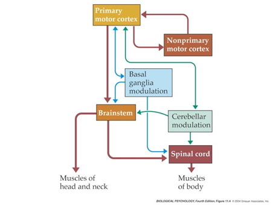

511-action
Rick Gilmore
2021-10-26 12:52:49
For fun
Output types
- What types of outputs are there?
- How are they produced?
- By the muscles
- By the nervous system
- Outputs include
- Movements, vocalizations, facial expressions, gestures
- Autonomic responses
- Endocrine responses
Types of movements

- Reflexes
- Simple, highly stereotyped, unlearned, rapid, acquired early
- vs. planned or voluntary actions
- Complex, flexible, acquired, slower
- Discrete (reaching) vs. rhythmic (walking)
- Ballistic (no feedback) vs. controlled (feedback)
Motor system anatomy
Key ‘nodes’

- Primary motor cortex (M-I)
- Non-primary motor cortex
- Basal ganglia
- Brain stem
- Cerebellum
- Spinal cord
Projection pathways
- Pyramidal tracts
- Pyramidal cells (Cerebral Cortex Layer 5) in primary motor cortex (M1)
- Corticobulbar (cortex -> brainstem) tract
- Corticospinal (cortex -> spinal cord) tract
- Crossover (decussate) in medulla
- L side of brain ennervates R side of body


Source: Wikipedia
- Extrapyramidal system
- Tectospinal tract
- Vestibulospinal tract
- Reticulospinal tract
- Involuntary movements
- Posture, balance, arousal
Muscles
- Generate forces
- In one direction
Functional classes
- Axial
- Trunk, neck, hips
- Proximal
- Shoulder/elbow, pelvis/knee
- Distal
- Hands/fingers, feet/toes
![[[@Cantu2019-sz]](https://doi.org/10.3389/fneur.2019.00951)](https://www.frontiersin.org/files/Articles/476718/fneur-10-00951-HTML/image_m/fneur-10-00951-g001.jpg)
Agonist/antagonist pairs

Anatomical types

- Cardiac
- Striated (striped)
- Skeletal
- Voluntary control, mostly connected to tendons and bones
- Smooth
- Arteries, hair follicles, uterus, intestines
- Regulated by ANS (involuntary)
How skeletal muscles contract
- Motoneuron (ventral horn of spinal cord)
- Projects to muscle fiber
- Neuromuscular junction
- Synapse between motor neuron and muscle fiber
- Releases ACh

- Motor endplate
- Contains nicotinic ACh receptors
- Activation produces excitatory endplate potential
- Muscle fibers depolarize
- Depolarization spreads along fibers like an action potential
- Ca++ released from intramuscular stores

- Muscle fibers contain bundles of myofibrils called sarcomeres
- Myofibrils
- Contain actin & mysosin proteins
- “Molecular gears”
- Bind, move, unbind in presence of Ca++, adenosine triphosphate (ATP)


Skeletal muscle fiber types

- Fast twitch/fatiguing
- Type II
- White meat
- Slow twitch/fatiguing
- Type I
- Red meat
Muscles as sensory organs

Two fiber types

- Intrafusal fibers
- Sense muscle length and change in length, e.g. “stretch”
- Also called muscle spindles
- Provide muscle proprioception (perception about the self, a form of interoception)
- Ennervated by by primary Ia afferents (sensory output from muscle); also secondary Type II fibers
- Ennervated by gamma (\(\gamma\)) motor neurons (motor input)
- Extrafusal fibers
- Generate force
- ennervated by alpha (\(\alpha\)) motor neurons
Monosynaptic stretch (myotatic) reflex
- Muscle stretched (length increases)
- Muscle spindle in intrafusal fiber activates
- Ia afferent sends signal to spinal cord
- Activates alpha (\(\alpha\)) motor neuron
- Muscle contracts, shortens length

- Gamma (\(\gamma\)) motor neuron fires to take up ‘slack’ in intrafusal fiber

:max_bytes(150000):strip_icc():format(webp)/HowtoBelay_3-571117903df78c3fa293859d.jpg)

Why doesn’t antagonist muscle respond?
- Polysynaptic inhibition of antagonist muscle
- Prevents/dampens tremor
Speed of sensory information propagation
- Brain gets fast(est) propagating sensory info from spindles

Disorders of movement
- Parkinson’s
- Huntington’s
The Faces of Parkinson’s
- Slow, absent movement, resting tremor
- Cognitive deficits, depression
- DA Neurons in substantia nigra degenerate
- Treatments
- DA agonists
- DA agonists linked to impulse control disorders in ~1/7 patients (Ramirez-Zamora, Gee, Boyd, & Biller, 2016)
- Levodopa (L-Dopa), DA precursor

Huntington’s

- Formerly Huntington’s Chorea
- “Chorea” from Greek for “dance”
- “Dance-like” pattern of involuntary movements
- Cognitive decline
- Genetic + environmental influences
- Disturbance in striatum
- No effective treatment
- But progress in an animal model targeting abnormal protein products (Li et al., 2019)
Clinical trial focused on gene therapy
The big picture
- Control of movement determined by multiple sources
- Cerebral cortex + basal ganglia + cerebellum + spinal circuits
The “real” reason for brains


What does the cerebellum do?
- Predict future sensory states? (Ito, 2008)

Systems perspective
- Cognitive/affective states
- Nervous system states
- Muscle states
- Actions
- Consequences of actions on world states
- Sensory states
![[[@Powers1973-zn]](http://www.pctresources.com/Other/Reviews/BCP_book.pdf)](img/powers-5.2.png)
![[[@Powers1973-zn]](http://www.pctresources.com/Other/Reviews/BCP_book.pdf)](img/powers-5.1.png)
![[[@Powers1973-zn]](http://www.pctresources.com/Other/Reviews/BCP_book.pdf)](img/powers-6.1.png)

{kind=link}
{kind=link}
References
Cantú, H., Nantel, J., Millán, M., Paquette, C., & Côté, J. N. (2019). Abnormal muscle activity and variability before, during, and after the occurrence of freezing in parkinson’s disease. Frontiers in Neurology, 10, 951. https://doi.org/10.3389/fneur.2019.00951
Ito, M. (2008). Control of mental activities by internal models in the cerebellum. Nat. Rev. Neurosci., 9(4), 304–313. https://doi.org/10.1038/nrn2332
Li, Z., Wang, C., Wang, Z., Zhu, C., Li, J., Sha, T., … Lu, B. (2019). Allele-selective lowering of mutant HTT protein by HTT-LC3 linker compounds. Nature, 575(7781), 203–209. https://doi.org/10.1038/s41586-019-1722-1
Powers, W. T. (1973). Behavior: The control of perception. Aldine Chicago. Retrieved from http://www.pctresources.com/Other/Reviews/BCP_book.pdf
Ramirez-Zamora, A., Gee, L., Boyd, J., & Biller, J. (2016). Treatment of impulse control disorders in parkinson’s disease: Practical considerations and future directions. Expert Rev. Neurother., 16(4), 389–399. https://doi.org/10.1586/14737175.2016.1158103